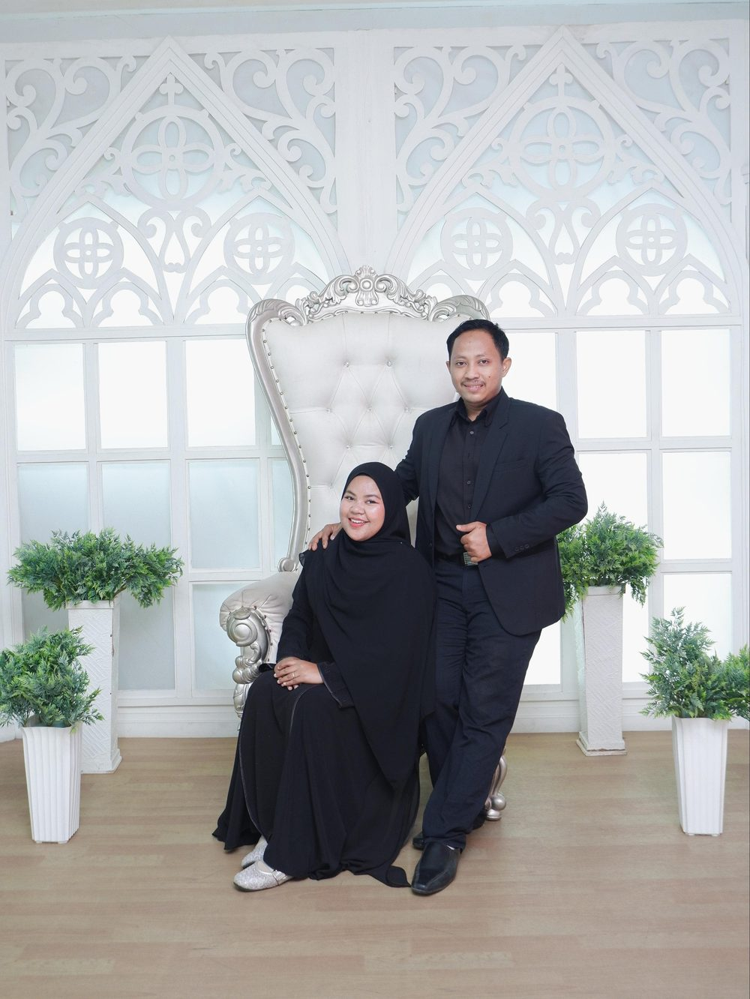
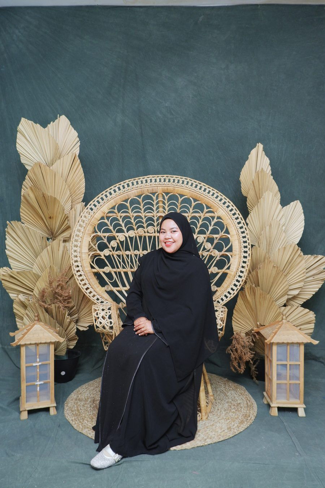
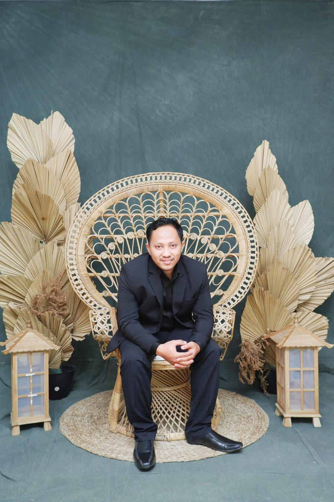
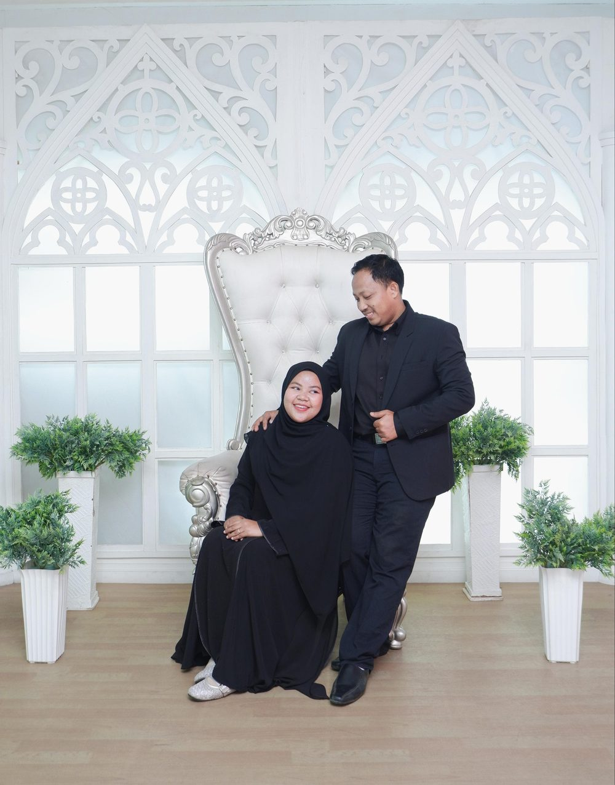
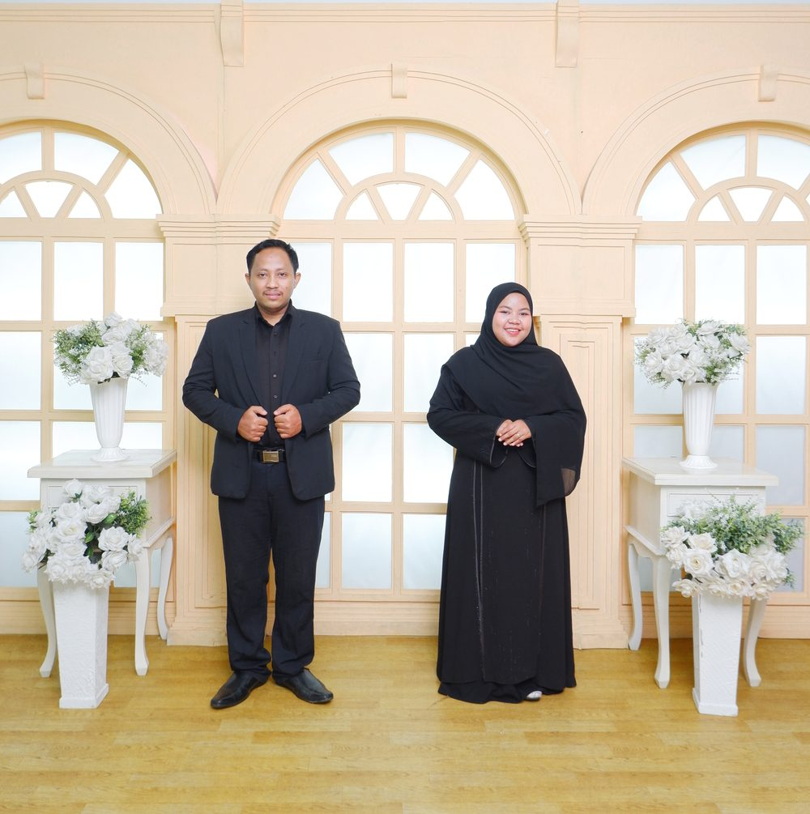
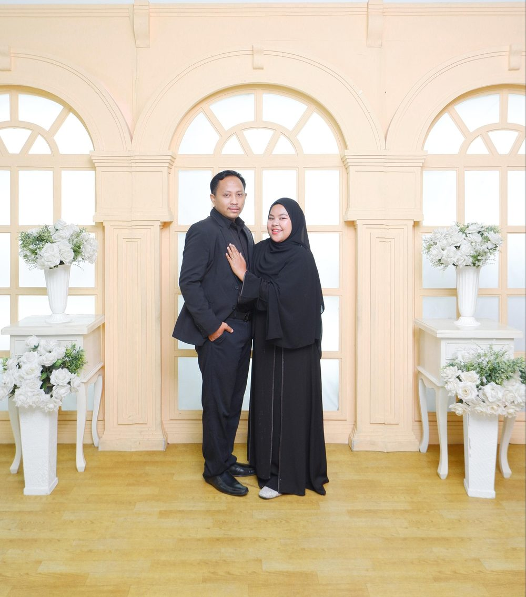

Wedding Invitation
The Wedding Of

Kalideres · Jakarta Barat
وَمِنْ اٰيٰتِهٖٓ اَنْ خَلَقَ لَكُمْ مِّنْ اَنْفُسِكُمْ اَزْوَاجًا لِّتَسْكُنُوْٓا اِلَيْهَا وَجَعَلَ بَيْنَكُمْ مَّوَدَّةً وَّرَحْمَةً
"Dan di antara tanda-tanda kekuasaan-Nya ialah Dia menciptakan untukmu isteri-isteri dari jenismu sendiri, supaya kamu cenderung dan merasa tenteram kepadanya, dan dijadikan-Nya diantaramu rasa kasih dan sayang."
Q.S. Ar-Rum : 21
All because two people fell in love — dan Allah menyatukan dua hati yang saling melengkapi, dalam ikatan yang penuh berkah dan kasih sayang.
Dengan Penuh Kebahagiaan

Mempelai Wanita
Fitria
Fitria Ramadhani
Putri keempat dari 4 bersaudara
Bapak Jumchoir
& Ibu Ela Haryati

Mempelai Pria
Barkah
Achmad Subarkah (Barkah)
Putra keempat dari 4 bersaudara
Bapak H. Paino
& Ibu Hj. Siti Maemunah
Hari Istimewa Kami
Sesi I
Akad Nikah
08.00 WIB
Sabtu, 3 Oktober 2026
Sesi II
Resepsi Pernikahan
10.00 WIB — Selesai
Sabtu, 3 Oktober 2026
Lokasi Acara
Kediaman Mempelai Wanita
Jalan Kebon 200 RT.003 RW.006, Kel. Kamal
Kec. Kalideres, Jakarta Barat
Our Love Story
Setiap cerita cinta itu indah, namun kisah kami adalah yang paling kami syukuri
1. "Awal yang Sederhana"
Semua berawal dari pertemuan yang tak pernah kami rencanakan. Dari obrolan sederhana melalui pesan singkat di BBM (BlackBerry Messenger) pada Tahun 2015, berlanjut menjadi tawa yang menghangatkan, hingga rasa nyaman yang tumbuh perlahan.
Saat itu, kami belum tahu bahwa perkenalan ini akan menjadi awal dari perjalanan panjang yang kelak membawa kami pulang pada hati yang sama.
2. "Jeda yang Mengajarkan"
Tidak semua kisah berjalan tanpa luka. Pernah ada waktu ketika kami memilih berjalan di arah berbeda, mencoba melupakan, dan hidup tanpa satu sama lain.
Ternyata, jarak tidak mampu memadamkan rasa, dan waktu justru mengajarkan bahwa hati selalu tahu ke mana harus kembali.
3. "Dipertemukan Kembali"
Takdir mempertemukan kami sekali lagi. Kali ini bukan sekadar untuk mengulang cerita, melainkan untuk memperbaiki apa yang pernah rapuh.
Kami belajar bahwa cinta bukan tentang tak pernah berpisah, tetapi tentang keberanian untuk kembali memilih orang yang sama, meski telah melewati banyak ujian.
4. "Selamanya Memilih"
Kini, perjalanan itu membawa kami pada langkah yang paling kami nantikan. Dengan doa, restu, dan keyakinan, kami memutuskan untuk mengikat janji suci dalam satu ikatan pernikahan.
Semoga kisah yang pernah putus dan kembali menyatu ini menjadi awal dari cinta yang terus bertumbuh, saling menguatkan, dan bertahan hingga akhir waktu.
Momen Berharga Kami



Ucapan & Doa Restu
Hadiah Digital
Doa restu Anda adalah hadiah terindah bagi kami. Namun jika Anda ingin memberikan tanda kasih, berikut informasinya:
Bank BNI
Nomor Rekening
1796682818
Achmad Subarkah
SeaBank
Nomor Rekening
901057012328
Fitria Ramadhani
Terima Kasih
Merupakan suatu kebahagiaan dan kehormatan bagi kami apabila Bapak/Ibu/Saudara/i berkenan hadir dan memberikan doa restu kepada kami.
Hormat kami yang mengundang
Fitria & Barkah
03 · 10 · 2026
Made with Godinov